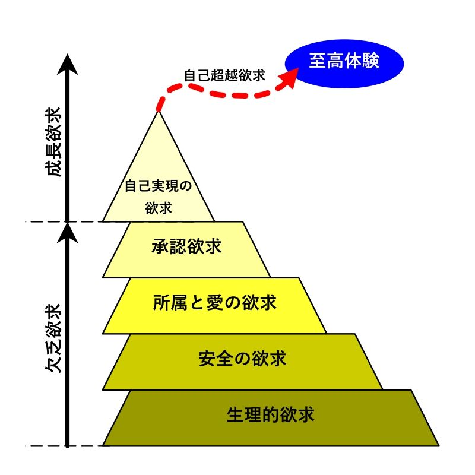

| わたしの本棚: セルパブ２棚目 | |
| 三世 留男 | |
| (2019) | |
|
わたしの本棚
三世 留男
|
本書は、わたし（三世留男）が実際に最後まで読んでおもしろかった個人出版（セルフパブリッシング＝セルパブ）本五十冊を紹介する本です。
内容は二〇一八年九月から二〇一九年一月にかけて自身のブログに書いていた読書感想文をまとめたものになります。
セルパブ本に興味を持たれている方はもちろんのこと、特に次の項目に当てはまる方にお勧めのセレクションとなっております。
〇クセの強い本が好き
〇理系、もしくは最新科学技術に興味がある、ＳＦ好き
〇ミステリ好き
〇ファンタジーは苦手
〇自ら創作している
〇読書できるまとまった時間が少ない
〇読書に没頭したい
〇読みやすい文章が好き
以上はわたしのパーソナリティでもあったりします。このようなわたしと好みが近い方なら、本書のセレクションをおもしろいと感じていただけるはずです。
それではこの極々個人的なセルパブセレクションをどうぞご堪能ください！
|
セルパブ本 ２棚目（五十冊）
|
＜ストーリー＞
人探し専門探偵サイトウ・ケイイジのところに奇妙な人探しの依頼が入る。それは依頼人も捜索人も不明なものだった。富豪のお遊びではないかと最初は断っていたサイトウだが、BOSSに押し切られ依頼を受諾。わずかな手がかりからあるホテルに向かうとそこで爆破テロに巻き込まれる。
＜感想＞
主人公サイトウ・ケイイジは、ニヒルでいろいろと批判的ですが、一度受けた依頼はやり遂げるという責任感も持っています。彼の相棒は、ネットから情報を収集する人工知能端末ニュースペーパーＪｏ。貧富の格差が極大になった近未来日本を舞台にしたハードボイルド探偵小説です。
前作『P%#』に続くシリーズですが、内容は本作だけで完結するため、ここから読んでも問題ありません。内容も文体もハードボイルドな探偵小説であるのは変わりません。
人探し専門ということで、前作同様、前半は死体が出てきません。それでも「俺を探してくれ」とだけ書かれた依頼はとても興味をそそられます。その手紙だけから手がかりを探し出していくあたりもカッコいいです。
今回は貧困層と富裕層の間の闘争が裏に隠れていて、徐々に大きな陰謀に巻き込まれていきます。相変わらず主人公のサイトウは巻き込まれることを嫌がっていますが、依頼の人探しを続けていくと、否が応でも巻き込まれてしまうというところがおもしろいです。そしてラストは少し寂しい気持ちになりました。
たいへんおもしろかったです。シリーズ続編を希望します。
＜ストーリー＞
マンモス校の私立Ｃ・ランフリー高校で生徒会長選挙が目前に迫っていた。選挙戦は現生徒会長と新人との一騎打ちと目されていたが、生徒会顧問 日下ひなたの策謀により漆田姉妹が巻き込まれる。姉の琴香はロイミ部（ロイヤルミルクティー部）の総帥としてカリスマ的人気を誇り、妹の風奈は落語オタクの風雲児として恐れられていた。二人が関与することで生徒会長選挙は激動の渦に飲み込まれることになる。
＜感想＞
第一部の生徒会長選挙編と、第二部のロボット争奪編が収録されています。高校が舞台なのですが、そこに成熟した大人の世界を持ち込むことで未熟な高校生とのギャップを生み出しています。そのギャップをおもしろおかしく描いたハチャメチャ学園コメディです。
いずれも主演キャラは同じで、主人公は漆田姉妹です。姉妹どちらもキャラが際立っており、美少女のはずなのに態度は尊大で、周囲の大人たちや男たちを引っ張りまわします。登場する男たちはいずれも情けなく、女性たちの尻に敷かれっぱなしです。爽快です（笑）。
第一部では、そんな彼女たちが傍若無人な大立ち回りを演じます。その活躍ぶりには喝さいを贈りたいくらいおもしろかったです。第二部では一転、姉の琴香は普通の女子高生に戻ります。第一部での傲慢ぶりを知っているだけに、ただ普通にしているだけのその様子がとても可愛らしく見えました。いわゆるギャップ萌えってやつですか？
こういったらたいへん失礼かもしれませんが、あまり難しいことを考えずに頭を空っぽにして楽しめました。おもしろかったです。
＜ストーリー＞
二十年ぶりに掘り起こされたタイムカプセルの中には、見知らぬメモが混入していた。タイムカプセルを埋めたかつての少年少女は、その当時に団地で発生した事件を思い起こす。彼らは喉元に深く刺さった事件の骨を抜くべく当時のことを調べ始める。
＜感想＞
ミステリの定義にもよるのでしょうけど、わたしはこの本をミステリだと思いませんでした。読み進めていたときもそうですし、読み終わった今も、です。どちらかというと一般文芸（特定の分野に属さない小説）をミステリで味付けしたように思いました。
前半は煙幕を張りながら伏線を置いていっているわけですが、そんなことよりも、大人になった少年少女たちの今をしっかり描写していて、こころ動かされます。特に、余命宣告された男性と、婚期を逃した女性のこころの動きに共感しました。現実より少しオーバー表現にすることで、読む人の興味を惹くところが上手です。「黒い雲が腹の中で渦を巻いている」「子宮が疼く」とか。
後半はタイムカプセルに入っていたメモの謎を解いていくのですが、その推理過程は状況証拠の積み上げと仮定に仮定を重ねるものなので、スッキリしない人もいるかもしれません。しかしこれもミステリではないと思えば、団地に潜む闇をぼんやりと見せることで気味悪さを感じさせるための手法なんだなと納得できるでしょう。そしてタイトルの「アドラメレク」につながります。
無粋な編集者なら、冒頭にタイムカプセルを開けるところを持ってこさせるのではないでしょうか。そのくらい前半はのんびりしたペースで進みます。最近の読者ですと、読み進めることをやめるかもしれません。ですが、その前半が重要なのです。
＜ストーリー＞
致死性ウイルスのアウトブレイクによって人類を含む地球上の生物が死滅。残ったのは植物と 1 体のロボットＩＨＲタイプＹナンバー６（通称ロク）だけだった。ロボットは持ち主の指示通り家を守り続ける。
＜感想＞
人類が死滅してからのロボットだけの世界を淡々と描写した短編ＳＦ。一文一文がロボットのプログラムコードと実行結果のように書かれています。そこには感情が差しはさまれる余地がありません。特にロクが故障したときの描写は機械の冷たさを感じさせるものでした。
複製される世界は完璧に秩序だっていて、異常は即排除されます。その様はゲーム『シムシティ』のようです。この本はコンピュータによるコンピュータだけの世界秩序というものを思考実験した一つの結果だと思いました。
このように作者は理系なのかなと思わせる文体です。文章というより図面を読んでいる感じでした。理想的な図面には、その図形を二次元で説明するために必要な情報が全て詰まっています。一方で必要以外の情報は一切ありません。線一本、言葉一文に至るまで、全て意味のあるものなのです。この本は、ロボットによる複製世界を文章という図面に落とし込んだもののように感じました。
正直、一般受けしないとは思いますが、わたしにとってはとても興味深い考察でした。
＜ストーリー＞
ごく普通のタクシー運転手 桐野は、ふとした出会いから自分のタクシーがタイムマシンに改造されてしまう。改造したのは若い科学者 雁谷。彼はタイムマシンタクシーを使って時間旅行という社会実験をしようとしていた。最初の客は藤崎という食品貿易会社の社長。藤崎は過去に戻りかつての恋人を救おうと考えていた。
＜感想＞
タイムマシンとタクシーの組み合わせが古き良き時代のＳＦを感じさせます。技術的な描写は少なく、どちらかというと人間ドラマが主軸になっています。
作者はおそらく現代から見た一九六〇年代の若者の熱気を描きたかったのでしょう。現代と六〇年代を対比させるには、現代人を六〇年代に送るしかありません。そこにタイムマシンの必要性が出てくるのですね。
タイムトラベルにはパラドックスがつきものですが、このパラドックスをうまく説明できれば物語のリアリティを向上することができます。この本の中では、パラドックスは波紋限界論で解消すると説明しています。わかりやすい説明でした。
短編で気軽に読めました。おもしろかったです。シリーズ化も考えられているのでしょうね。期待したいです。
＜ストーリー＞
弁護士の穂積は、かつての指導担当だった冬川の弁護人に選任された。冬川は自分の事務所に火を付け、そこにいた事務員の女性を焼き殺したとされる。証拠も証言もそれを立証するに足りるが、動機についてのみ冬川は黙秘し続けていた。そして裁判が始まる。
＜感想＞
ストーリーは放火殺人の動機を解こうとするものですが、あくまで静かに淡々と調査や裁判が進みます。やれることが限られるなかで主人公の弁護士が思い悩む姿に、ドラマや小説にあるような名探偵やどんでん返しはそうそうあるものではない、これが実態なんだと作者が訴えかけているように感じました。そうだからこそ、この小説は他にはないリアリティがあるのだろうと思います。ラストもやり切れない気持ちになりましたが、これが現実なんですね。
文章も内容と同じく実直な感じで読みやすかったです。文庫本半分くらいの分量で気軽に読み始められました。
本筋とは別に、実務を経験していないと書けないだろうなという業界の裏話？ も多く、大変興味深く読みました。シリーズ化されているとのこと。他も読んでみたいと思います。
この本のようなリアリティ重視も好みですが、この作者によるもっと派手な法廷闘争も読んでみたい気もします。もしかしたらもうあるのかしら？
＜ストーリー＞
大阪育ちの女子中学生 望海は、父親に連れられてやってきた和歌山の漁港で、船頭の娘（晃）と出会う。たった一日で親友のように打ち解けた二人。わずか数日の出会いは記憶に残る思い出の一ページとなる。
＜感想＞
瑞々しい感性が光る短編です。大人と子どもの境目にいる女子中学生の心情が、わたしの汚れたこころを洗い流してくれるようでした。感情的になるほど幼くはない、かといって打算や達観するほど大人でもない、思春期のころの夢見がちなこころは輝きに満ちています。自信に満ち溢れていると思えば次の瞬間には不安にさいなまれる、このこころの揺れ動きを同性の友達との関係性でからりと表現しています。
成長して大人になったとき、かつての友達と会うかどうか......わたしも多分会わないだろうなと思いました。ガラス細工のように美化された思い出は、現実というハンマーによっていとも簡単に壊されるものです。思い出を大切にするということはそういうことなんだなと思いました。
なんというか、水彩画を鑑賞したような読後感でした。
あとタイトルの意味がいま一つピンときませんでした。この本の内容をどう言い表しているのでしょうか？ わからないのはわたしだけ？
＜ストーリー＞
羽田発ロンドン行き全日航空４３便が副操縦士ケビンにハイジャックされた。ケビンは高度知能を持つヒューマノイドロボットだった。ケビンは奴隷的待遇を受けるロボットたちの人権を求めハイジャックに及んだのだ。はたしてケビンの要求は実現するのか？ 乗客乗員三四〇人の命運やいかに！
＜感想＞
ロボット解放という途方もない要求を突きつけるケビンと交渉人との息詰まる攻防、日本政府の高度な政治判断、制御困難になった機体を操縦する緊迫した状況、解決した後でのどんでん返しと、ずっとハラハラドキドキしっぱなしのジェットコースター的サスペンスです。短編とは思えない濃い内容でした。
人工知能が人間と同様の教育を受け知性を獲得するといった基本設定は、同作者の『笑うコンピュータ』から一歩進んだもので興味深いものでした。「五感や手足のような環境との接点、環境との相互作用がないと知能が発達しない」という作中人物（作者）の主張は説得力があります。さらにその学習過程自体を人工知能に任せることで知性がブラックボックス化されると説明します。これは、現在主流のディープラーニングもそうですが、我々人間にはもう人工知能の中身がブラックボックスになってしまっていることについて警鐘を鳴らしているのですね。
コックピット内の機器や操作なども詳しく描かれ、管制とのやり取りなどもリアルです。自分が乗客としてそういう状況に巻き込まれたらと想像すると、飛行機に乗るのがますます怖くなりました（笑）。
一気に読んでしまいました。たいへんおもしろかったです。
誤記と思いますが、交渉人の牛尾がときに熊川や大垣（機長）という名前になったりという場面が何回かありました。
＜内容＞
『みさき』『光子菩薩』『忌避（仮）』『綾のーと』の短編 4 編が収録されている。いずれも実録ホラー体験集のような体裁で、『みさき』は神隠し、『光子菩薩』は見ると狂うお札、『忌避（仮）』は沖縄の御嶽 、『綾のーと』は事故物件が題材となっている。
＜感想＞
読んだ後、気味が悪くなりました。迫ってくるような怖さはありませんが、うすら寒くなるような怖さがあります。というのも、いずれも著者が集めたとされる断片情報を並べるといった体裁になっており、実際に何が起こっていたのかはっきりしない書き方になっているからです。読者が勝手に怖いほう（心霊・呪い・祟りだとか、人間の裏の顔）に想像を膨らませてしまうように構成されていて、読み返すほどに怖くなります。現場写真や新聞記事、ブログやyoutubeの動画までがギミックになっているのは電子書籍ならではの新しい形で勉強になりました。特に『綾のーと』は本当にブログがあって、見たときは変な鳥肌が立ちました。
わたし的には『光子菩薩』が一バン怖かったです。話の流れと文章コウ成であれだけコワくなるんだとおもいました。見てはいけないお札をミたあと、サイゴのページをよんでいるときはドクンドクンと心ゾウのドウキがおかしくな
＜内容＞
醬油の歴史から種類、製法、規格等々を分かり易く紹介する醬油入門書。
＜感想＞
大豆は英語でSOY BEANと言いますが、その語源はなんと醬油から来ているという興味深い話から始まります。わたしたちの食事には醬油や醬油加工品は欠かせません。わたしたちはお米と醬油で育ってきたと言っても言い過ぎではないのです。それほど身近な調味料なのにわたしは醬油のことを全く知らなかったんだなと、この本を読んで思いました。醬油のことを改めて見直す機会となりました。
この本は醬油の基礎知識を平易な言葉で丁寧に説明してくれますので、手軽に醬油のことを知りたいときはうってつけです。読み終わった後は、手に入れた醬油の知識を誰かに話したくなる、そういう本でした。
淡口醬油は「うすくち」と読むのに塩分は多い（色がうすいから淡口）とか、九州では甘い醬油がスタンダードなんだとか、ポン酢は醬油調味料で関西人のこだわりが異常だとか、知らなかったことが多くあっておもしろかったです。
日本は醬油の香りのする国、という著者の言葉にハッとさせられました。醬油だけでなく、身近すぎて気が付かないことって多くあるんだろうなと思いました。そういうことに気付けるように普段から感性を磨いていきたいと思います。
＜内容＞
実在世界の人間とサイバー空間に移住した人間との交流を描いたお話や、死んだ母の記憶データから人工知能として蘇った母との関係を描いたお話など、ＳＦ四編が収録された短編集。
＜感想＞
人間の意識をデジタルに移し替えると何が起きるのか？ という問いに対する作者の思考実験の結果がこの短編小説になったように思います。人間が人間を人間たらしめているのは何かということを突き詰めて考えていこうとする意思を感じました。
『黄昏の渚は意味なき追憶を永遠へと変える』では、作者は作中人物の口を借りて「意識は永遠に死を迎えない」と言います。この悟りにも似た結論は、いわゆる人間原理ともいえるものです。宇宙が存在している理由を人間の意識による観測に求めるという理論ですね。理論物理学者マックス・テグマークは、この原理が正しいのであれば、どんなことがあっても死なない自分を観測することができると言っています（サイエンス番組『モーガン・フリーマン 時空を超えて』より。ですがかなり意訳あり）。
『ココニヰル』は妻の意識障害を電子デバイスを脳に埋め込んで治すというお話ですが、実際にあった脳治療のロボトミー手術を思い起こさせる少しホラーテイストに感じました。なおロボトミーを知らない人は検索しないほうがいいです。特にロボトミー殺人事件なんかは下手なホラー小説より後味悪いですから。このお話は全然そんなことはなくて楽しめましたから良かったです。
この本は全般にサイエンスというよりフィロソフィーの趣の強い内容で、読み味は静かでゆったりとしていてハラハラドキドキな要素はありません。ですが、考えさせることが多くあっておもしろかったです。
＜ストーリー＞
観劇の途中に現れた天狗のような影。突然その黒い影に追われることになる青年は、暮れていく街を一睡もせず駆け抜けていく。逃げ続けるうちに、犬と少女が彼の逃避行に参加する。わけもわからず駆け続ける二人＋一匹は、よくわからない共感を抱いていく。
＜感想＞
主人公は、影に立ち向かうのではなく逃げるという選択をしました。ひたすら黒い影から逃げます。その黒い影が何か？ わかっていて目を背けているのかもしれません。ですが逃げるということを、これほど肯定的に感じたことはありません。
狂人と常人は紙一重であり、誰しも狂人になり得る素質を持っています。その境目となるのは、ほんの少しのきっかけだと思います。わたしたちも狂人となったことに気付いておらず、自分は真っ当でおかしいのは周囲と考えているのかもしれません。周囲を矯正せねばならぬという偏執に囚われていないと自分は言い切れるでしょうか？ 断言できないことに対して逃げるという選択ができるでしょうか？
わたしは取り留めもなくそんなことを考えながらこの本を読みました。
＜ストーリー＞
二〇〇一年五月、地元の走り屋とプロレーサーが対決するという車雑誌の企画が、ついに函館で行われることになった。出場する地元チームの一人、速水俊介は悩んでいた。なぜおれは走り続けるのだろうか？ 彼はその答えを求め走り続ける。
＜感想＞
この本の舞台である二〇〇〇年前後は未曽有の就職氷河期で、何十社、それこそ百社以上も受けて就職できない学生が大勢いるというニュースが身近にあった時代でした。わたしも氷河期組ですので、そのときのことは今でも思い出されます。それでも若者の間には閉塞感はあまりなかった気がします。みな、アルバイトなりで生計を立てながら日々楽しんでいました。その楽しみの一つが、クルマだったのです。
この本では、峠を攻める走り屋にフォーカスを当てています。当時は『頭文字Ｄ』や『湾岸ミッドナイト』がブームとなっていて、わたしの周りでも愛読している人が大勢いました。ちなみにわたしは渋いオジサマが主人公のマンガ（『ＳＳ』や、ちょっと古いけど『ＧＴロマン』）のほうが好みでした。この本を読んで懐かしい車名に出会い、そのときのことを思い出しました。
九〇年代後半までは、まだクルマにロマンがありました。若い男たちは自分の愛車を速く走らせることに血眼になっていたものです。わたしのアルバイト先の先輩たちも、ＦＣで峠を攻めて刺さったり、Ｒ３２を新車で買ってローン地獄になったり、結婚するのにＺを手放さなかったり、そんな人たちばかりでした。こういう趣向は現代の若い人にはなかなか理解できないかもしれませんね。
前置きが長くなりました。この本では、就職できずにアルバイトで生計を立てながら愛車で峠を駆け抜ける、走り屋たちのお話です。主人公の速水は、プロレーサーになることを夢見ながらも、現実に叩きのめされ、日々を惰性で過ごしています。そこに昔の後輩が現れ、彼をなじります。二年間何をやっていたんだ！ と。とはいっても、実は走り屋からプロレーサーになることはほとんどできないのです。では彼らは何のために峠を攻めるのか？ それを突き詰めていくのがこの本のテーマだと思いました。
でもよく考えると、これはわたしたち創作者の喉元に突きつけられた問いと同じだと思いました。何のために書くのか？ 漫然と書くことは、無為ではなく怠惰なのです。
夢というものへの向き合い方、これを再度考えるきっかけになりました。おもしろかったです。
＜ストーリー＞
極貧アルバイターの森口健太郎は、女性タレントのさくら鈴に憧れ、テレビ業界に就職を夢見ていた。最後のチャンスとして受けた制作会社カミナリテレビになぜか引っ掛かり、紆余曲折 を経て超一流軍団セルプロダクションに「期待のホープ」として縁をもらう。はてさて、彼はテレビマンとしてやっていけるのか？ その恋は実るのか？
＜感想＞
前半は、テレビマンになる前の主人公のダメっぷりを笑いで包みながら描いています。彼は自分のネガティブな内面を知っているがゆえに、外面ではポジティブな言動・行動をしています。しかしそのポジティブさが、偶然が重なって人の目にとまるのです。それは結局のところ勘違いなのですが、とんとん拍子に話が膨らんでいきます。しかし彼は勘違いによって得たチャンスを、自分の実力とさらに勘違いして掴みます。成功を掴むには、そういった図々しさが必要なんだなと思い知らされました。
後半は、彼がテレビマンとして成長していく姿が描かれます。はっきり言うと、挫折ばかりです。そこには物語の前半でみせていたダメっぷりは影を潜め、血反吐 を吐いても地面をはいつくばっても粘る彼がいました。すこしカッコいいと思ってしまいました。
わたしたちが常日頃ボーッと見ているバラエティ番組も、多くの人たちの冷汗・油汗・血反吐によって作られている、ということが良くわかりました。この本はそんなテレビ制作の裏側を舞台に若者の成長を笑いを交えてさわやかに描いています。たいへんおもしろかったです。
＜ストーリー＞
元禄十五年十二月、赤穂浪士四十七士による吉良邸討ち入り。吉良上野介の首級を挙げたこの事件に参加しながら、ただ一人切腹を免れた者がいた。その寺坂吉右衛門のその後を描いた時代小説。
＜感想＞
年末時代劇でおなじみの忠臣蔵で必ず描かれるのが、この寺坂吉右衛門の件です。なんといっても、四十七人で討ち入りしておきながら切腹したのは四十六人で残り一人はどうなっちゃったの？ というわけですから描かざるをえません。大抵は、大石の密命を帯びて消えたとする描かれ方をしており、この本も基本はそのストーリーです。
江戸時代、幕府は街道を往来する人の出入りを厳しく管理しており、要所には関所が置かれていました。追手が掛かっていると関所で捕まります。寺坂吉右衛門がどうやって関所を破るか。それがこの本のだいご味です。多少偶然が重なる気がしますが、それも理由があり......。
旅先で出会った人たち（庄屋の娘や、山賊に追いはぎされた亭主など）との交流もありますが、まさしく一期一会のさっぱりした描き方でした。え？ この場面はこれ以上膨らまないの？ と思ってしまうわたしにはなかなか短編は書けないなと思いました。
＜ストーリー＞
アフガニスタンに派兵されていた米兵による、地元家族の惨殺と少女への凌辱 の様子がインターネット動画で流出。その動画は瞬く間に世界中に広がり、ショックのあまり「諦めテロ」が頻発した。その動揺はついにパキスタンでのクーデターを引き起こす。一触即発の中、人類は核戦争を止められるのか？
＜感想＞
物語の終盤まで読んで、わたしは憤慨のあまりスマホを叩き付けたくなる衝動にかられました。矛先はもちろんこの本ではありません。現実のこの世界に向けて、です。この本では、特殊体質を持つ少年が紛争を止める最後の希望になってしまいます。彼はまだ小学三年生の無垢な少年です。ただ周囲の人に多幸感を呼び起こす特殊体質を持っていました。だからこそこの本ではその少年の力にすがってしまうのです。しかし換言するなら、そんなフィクションでなければ存在し得ない人物でなければ目の前の戦争を止められない、平和にするなんてことはできない、とこの本は言っているのです。
もちろんこの本の中でも、戦っている当事者や大人、中学生もが、悲惨な映像や言葉に感化され自らの信じる論理によって行動を起こします。誰もが自らの考えによる平和を叫びながら戦い始めるのです。誰もが良かれと思って始めることでも、それによって最悪の結末につながっていることもある、ということなのです。
結局、平和を叫ぶばかりではなんの役にも立ちません。それでも作中人物はこう言います。「わたしだけが部外者でいるわけにはいかない」 無力であることを理解したうえで行動を起こさざるを得ない絶望感と高揚感。だからわたしは現実のこの世界の愚かしさに憤まんやるかたない思いを覚えたのです。これがこの本の真の目的であるのなら、とてつもなく残酷で、それでいて啓示的な結末だと思いました。
文章は多くの人物が登場する群像劇で、それぞれのパートは一人称で語られます。その語りの中にかなり専門的な内容が差し込まれるため、ときおり誰の言葉なのか心情なのかわからなくなるところもありました。そういう意味で粗削りな印象を受けましたが、基本的に読みやすかったです。また、この本のような刺激的なテーマでは作者の押しつけがましい説教が透けて見えて幻滅することがあるのですが、この本ではそのようなこともなく、ものの見方を多面的に考えさせてくれる書き方になっていました。
読み終わったとき、ボーッと世界平和について考えました。そんなことこれまでほとんどなかったのですが......。これが本の持つ自己変革の力なのだと納得することができました。
＜ストーリー＞
大学生のカズキは高校生時代にひと夏だけ付き合っていたユナという少女のことを忘れられないでいた。彼女の写る写真は一枚だけ。しかしアルバムを開けると、その写真から写っているはずのユナの姿が消えていた。
＜感想＞
冒頭の写真の人物が消えるという出来事、白昼夢のようなユナとの思い出を語る前半の内容から、オカルト系かＳＦ系のお話かと思いましたが、しっかりミステリでした。カズキと妹まりあの軽い掛け合いに、パズル作家で名探偵のクリスの色男キャラクタが合わさってライトノベルのような読みやすさです。しかし内容はロジカルに良く考えられたもので、読みごたえがありました。
気楽に読み進めていけるわりに結末がハッピーではないのがせつないところですが、この話の筋ではそう持っていかざるを得ないのでしょうね。色男の謎についても、確かにそんな描写がそこかしこにあって、ああなるほど、と感心しました。おもしろかったです。
＜ストーリー＞
あるミステリ雑誌の奨励賞を受賞した大学生の都並大祐は、担当編集の押しに負けて、気の進まない新作の構想を練り始める。その彼にちょっと変わった三人の女子大生が絡んでくる。彼の新作は完成するのだろうか？
＜感想＞
少しとぼけた主人公の彼と、それぞれキャラが立った女子大生三人（＋女性編集）とのライトでエッチな関係性が可笑 しくもほっとする短編です。そのストーリーも驚くべきもので、ミステリを構想しながらその犯人を捜すというストーリーでありながら、ラストは『〇〇〇〇〇殺し』になるという、なにこれすごい！ というミステリでもあります。
主人公自身がが述懐するようにちょっとわかりずらいところもありますが、読み直してみるとそれも仕掛けなんだと思いました。
このようにストーリー運びも只者ではないのですが、それよりもテンポの良い文章だけでも読み進められるというところもすごい。いちいち言葉回しがおもしろく、内容がなくてもずっと読んでいられそうです。ユーモアのある語り口は、西尾維新か、いや森見登美彦に近いように思いました。
こんな本があるからセルパブを読むのをやめられません。たいへんおもしろかったです。
以下蛇足。
この本は主人公の一人称で書かれています。一人称の難しいところは、語り手の知らないことは書けないということと、状況を主人公の語りで説明しなければならないということです。この二つの難しさのために、わたし個人的には、一人称においては情景描写に違和感が出ることが多いと感じています。しかし、この本ではその違和感が全くといっていいほどないことに驚きました。よく読んでみると、主人公が自分の目で見た情景を自分の言葉で語ってることがわかります。当たり前のことかもしれませんが、これが実は難しいことなのです。少なくともわたしにとっては。わたしなどが一人称で情景描写を書くと、作者の目から見た状況説明になってしまいます。
わたしの考える一人称の理想形が、この本にありました。たいへん勉強になりました。
＜ストーリー＞
ある田舎の高校教師が首を吊った。教え子たちがお悔やみに伺うと、先生の部屋の壁は異様な落書きで埋め尽くされていた。次第に村に広がる異変。幼馴染の高校生三人も呪いに巻き込まれていく。
＜感想＞
前半は、村で発生し始めた小さな異変に気付いた三人の高校生が、それが心霊現象なのか調査していくというミステリ要素を含んだストーリーで、読者の気を引くように進んでいきます。何かがヒタヒタと忍び寄る空気感があって怖いです。
後半からがらりと雰囲気が変わります。前半の、背後に迫る恐怖という感じはなくなり、悪霊たちはもう隠れるのをやめて、呪いとの闘いの様相を呈してきます。ホラーなのにスピード感があって最後までスイスイと読めました。
わたし個人的には、前半の流れのまま恐怖感を盛り上げておいて最後に「ギャー！」と驚かされるストーリーも読んでみたいと思いました。
＜ストーリー＞
ベトナム戦争をライカのみを持って単身取材した経験を持つ大先輩が亡くなった。後輩の内田は、その大先輩が戦場で使っていたライカを手に入れる。しばらくはそのライカのことを忘れていた内田だったが、大先輩の娘に父の形見を使ってくれと言われライカの魅力に引き込まれていく。
＜感想＞
冒頭、ライカを持ってベトナム戦争を駆けずり回った思い出話を酒場で披露する大槻（大先輩）の勢いにつられてストーリーに引き込まれます。それが過ぎると、スポーツ新聞カメラマンの内田と、さらにその後輩のユースケの高校サッカー取材の話しになります。ライカが出てくるのは終盤に差し掛かってからになりますが、そこから一気に物語は盛り上がっていきます。高校サッカーを通して現れる人間ドラマをカメラで切り取る新聞記者（カメラマン）の活躍が新鮮です。こうやって記事が書かれているんだと思うと、新聞も捨てたもんではないなと思いました。
ライカといえば銀塩カメラの代名詞で、デジカメ全盛の今でもそのブランドは色あせていません。それは積み上げてきた歴史の賜物。このストーリーでもそれがよくわかります。かつてカメラマンは、ライカ一つに命を預けていました。それほど信頼に値する道具だったのです。その信頼は、その後日本の一眼レフ（ニコンＦ系）に受け継がれ、現在はデジカメに代わりました。しかし、カメラが好きな人にとってはライカとはその歴史によって信仰に近い神格化された存在になっているのです。
この本でも書かれていますが、スナップを撮るにはレンジファインダーが最適、というのはその通りで、一眼レフのような大鑑巨砲のカメラを向けられたら被写体は委縮するでしょう。構えずとも撮れる（もちろんそのための腕はいる）、シャッター音も小さいライカは被写体と近距離で自然な姿を撮れるベストな撮影機材だと思います。またレンズの設計自由度も高く、個性的なレンズも数多く残っています。
この本を読んで、久しぶりにフィルムカメラを持ち出したくなりました。フィルムカメラでは１ショットにかなり重み（現像とプリントでお金がかかるため）がありましたが、デジカメの今ではなにも考えずに無限にシャッターを切れます。いい時代になったのか、むなしい時代になったのか、そういう感傷にひたりました。おもしろかったです。
＜ストーリー＞
悪行三昧を繰り返す山賊の男が、あるとき自分の殺した女の骸をじっと眺める法師に出会った。一休禅師。男は一休との問答の末、山を下りる。しかし村人に捕らえられ、耳鼻を削がれてしまう。骸骨のごとき相貌となった男は一休に「二漏」と安名され、「何もすな」という行を与えられた。
＜感想＞
一休の教えを頑なに守ろうとする二漏。その教えはとてつもないものです。「何人も救うな。悉く見捨てよ」
善を成すなという。善悪は表裏一体。ならば善がなければ悪もないということではないか。
命が路傍の石ほどの価値もなかった時代。二漏は諸国を乞食で行脚します。誰も救わず、ひたすら見棄てる。命を見棄ていきます。
河原に住み、同じく住む清目 や三昧 、非人と交わります。死が日常の中に暮らす彼らも二漏に教えを与えるのです。
そしてついに自らが攫い売った娘と再会します。しかし「報いとは思うな」という教えに身もだえする様に、わたしのこころも震えました。
悟りとは阿呆の居直りである。悟らんとすることは強欲である。
悪をなさず善もなさず。世に仏なきことを知れ、前後に道はなし。
室町時代の言葉や風俗などを綿密に考証してあるだろう文体により、読者はその時代にタイムスリップして骸骨法師「二漏」の人生を追体験し、共感し、ともに考えることになります。まさしく本で読むことのすばらしさを感じさせてくれるものです。これを映像化しても、空虚な絵空事にしかならないことは容易に想像できます。本であるからこそ感じられるものがあるのです。
すみません。感想がめちゃくちゃになるほど、ちょっと言葉が見つからないです。読後は混乱しながらも透徹したこころ持ちになりました。
こんなすごい本が作者の創作によるものだとするならば、わたしごときでは足下に及ばない気がします。しかも無料なんですよ。信じられないです。
https://www.amazon.co.jp/dp/B0785G4FK9/
（『このセルフパブリッシングがすごい！ 二〇一九年版』https://www.amazon.co.jp/dp/B07MZZ25Q3/ に紹介コラムを書きました。この感想文をベースに一晩頭をひねって書きましたので、そちらもご参考ください）
＜内容＞
呆然とソファにすわっていると、認知症の兆候と間違えられて......から始まる自虐と考察の私小説。
＜感想＞
年老いて売れもしない創作物を量産している（と自虐的に語る）作者の、日々虐げられる日記です。虐げられている自分を自虐的におもしろおかしく描写し、その理由に迫っていきます。その迫り方がまた壮大で捉えどころがなく、おかしいながらも考えさせられます。ある意味、悟り（ヤケクソと語る）の境地なのだろうと思います。作者の念願は、「限られたごく一部の者が特権的に享受している困難な学びを、誰でも理解できるようにすること」と言っています。これはわたしも共感しました。
そのほかにも人生の妙域に達した作者ならではの含蓄のある言葉や考えが一杯あります。おもしろかったし勉強になりました。まさしく「精神の錬金術であり、想像力のアクロバットという文芸」でした。
惜しむらくは短いこと。この本の半分は著書紹介なのです（笑）。もっと本編を読んでいたいと思いました。
https://www.amazon.co.jp/dp/B07JF2GRJ9/
（リンク切れを確認）
＜内容＞
単純で思い込みの激しい中学生の明朗 は、担任のイケメン先生を悪徳教師と決めつけ、友だちのアイドルオタク芹輝 を掃除の人質に置いて、自分は昼食のイチゴサンドを買いに向かう、という『走れメロス』の二次創作『稀代の後継者』を含む五編を収録した短編集。
＜感想＞
内容紹介が意味が分からないかもしれません（笑）。ですが、本当にこんなお話です。ところどころ（意図的な）論理の飛躍がありますが、そこがまた可笑しくて笑えます。主人公やその周辺もさらに作者も、全員シリアスだからこそおもしろいコメディになっています。二編目以降は、コメディではなくまじめなものになりますが、ストーリーは捉えどころがなくなります。雲の上を歩くような落ち着かない感じで読みました。特にこころに残ったのは、高校生が衝動的にフィリピンに留学するお話の『触れてみて』です。これは両親を亡くした青年の靄 のかかったような心境を丁寧に描写しています。悲壮なことは一切書かれていませんが、読み終わった後はなぜか寂寥感で一杯になりました。
それ以外の短編も含めて、なんだかズシリとこころに残りました。エンタメ本なんかより、もしかしたらこういう本のほうがずっとこころに残るのかも、と思いました。おもしろかったです。
＜内容＞
雷が落ちると、そこに思いを残して亡くなった人が戻ってくる。傑作小説を書き上げながら心臓発作で死んだ若者、画期的な研究をしていた大学教授、濡れ衣を着せられた青年、彼らがこの世に残した思いは遂げられるのか。三編を収録した短編集。
＜感想＞
内容紹介を読んだときはスワンプマンという思考実験を思い出しましたが、それとは違って、魂だけが戻ってきて思いを遂げようとするファンタジー系のお話でした。
最初のお話の『懸賞小説』では、死んだ作家志望の青年の魂は出てこず、行動力だけはすごい青年が代わりに遺稿を応募するというストーリーです。循環するようなメタ構造になっています。二番目は、夢を見てるかのような朧 げなシーンと回想シーンが交互に繰り返され、主人公が記憶を辿っていく過程を一緒に味わえるようになっています。三つ目は、オーソドックスな主人公目線の語りですが、淡泊な語り口が魂目線に良く合っていました。
いずれも凝った構成で楽しめました。おもしろかったです。
＜ストーリー＞
二十八歳になった僕の周りでは、急に結婚というワードが身近になり始めて、僕も結婚について少し考え始めてみた。彼女ができたらどんな感じなんだろう？ そよ風に髪がなびいてウフフとほほ笑んでくれる女の子が理想なんだけど......
＜感想＞
主人公の井川ヨシトは、自己主張が苦手でいつも人に合わせてしまいます。そんな彼の語りで綴る、コメディータッチの小さな幸せのお話です。
彼は自分の性格をよく理解していて、もっと積極的にしたいと思いながら、なかなかそうもできません。それは優しいからと思います。争いごとを好まない性格がにじみ出て、人当たりがいい人だなと読んでて好感を持ちました。彼は、会議の前など緊張して体調が悪くなったり、季節ごとに疲れやすくなったりと、虚弱なんじゃないかと思ってしまうところもありますが、それも自分に正直だからなんでしょう。わたしなんかは、そういうことがあっても強がったり、自分自身に言い訳をして取り繕うところですが、彼は失敗も受け止めて前向きに進もうとします。マジメだと思います。
とはいえこういった性格ではなかなか恋人ができないのもそうなのでしょう。しかしそんな彼にもついに春が訪れます。ゆっくりと愛を育んでいきます。わたし、読んでて応援していました。ガンバレッて。終盤は本当にこころ温まります。冬場に最適。
小説やマンガ、映画では主人公が無双して活躍するストーリーが主流で、それを読むわたしたちも、そうあるべきだと思いがちですが、ふと立ち止まって自分を振り返ると、そんなことはできっこない普通の人間なんだと気づいてがっかりしたりします。この本は、普通の男の人の普通の恋愛を題材にしています。読んでいて、普通でいいんだ、と安心しました。とてもおもしろかったです。
主人公は、ガサツで粗暴でヒステリーでたまにやさしい母と妹とみはるさんを見て育ち、楚 々 とした女性に憧れがあるみたいですが、残念ながら、世の女性のほとんどはみはるさんみたいな人たちです（笑）。
＜ストーリー＞
職業作家を目指す僕は、各地の文学賞に応募するも落選することが続き、ひどい孤独を感じていた。その孤独と正面から向き合うために、物語を書き始めることにした。その物語の主人公は、詩的な自分と実務的な自分を使い分ける銀行員の男性だった。
＜感想＞
作家を目指す僕が、機械的に行動する男性を主人公に据え、彼の行動と精神に自分を投影させながら自身のこころの奥底を探っていく、というストーリーです。作中作のほうは、途中から精神世界の描写が色濃くなっていき、なんというかエッシャーの絵画を見ているような感覚になりました。この不条理な世界の描写ばかり読んでいると食傷しそうになるのですが、時折作家志望の僕がいる現実世界に戻ってきますので、そこで読者（わたし）も目が覚めて、ああこれは作中作だからいいんだ、とリセットして、またその意味を考えることができました。あえてそのように構成されているんだと思います。
この本の内容は自分にはなかなか解釈が難しかったですが、夢の世界がこんな感じだなと不思議な共感を持ちました。最後まで一気読みしました。おもしろかったです。
＜ストーリー＞
三十四歳主婦 吉江咲子は鬱屈としていた。昔取った杵柄 でピアノ教室を始めてみたが、晴れない気分は変わらない。そのうちにいやなことが立て続けに起こり、ついに彼女は家を飛び出す。伯父の別荘で出会ったのは若い画家だった。
＜感想＞
我慢し続けてきた主婦が衝動的に全てを捨てるまでの感情の高まりを丁寧に描いています。主人公の咲子目線で見るとちょっとかわいそうなくらいな出来事が数多く起こりますが、シチュエーションとしてはありがちなことを考えると、周囲の人たちは咲子が思ってるほど気にしていないのかもしれないと思いながら読みました。そういった面も含めて、女性の精神面をうまく描いているなと思いました。
精神的に疲弊した咲子は全てを投げ出して別荘に逃げ込みますが、そこで新しい男と出会います。ドロドロの愛憎劇を予感させますが、あっさり風味でした。これも現実的な感じでした。
全体に女性の情動をリアルに描写しており勉強になりました。おもしろかったです。
作中、料理のシーンがいくつかありますが、かなり細かく書かれていて作者は普段料理をする方なのかなと想像しました。おいしそうでした（笑）。
＜ストーリー＞
火星と地球の距離は約四億㎞（遠点）。その距離では光の速さでも二十二分かかる。すなわち通信は最大二十二分のタイムラグが発生する。火星に住み始めた人たちとの通信を円滑にするために、事前に通信内容を予言する情報予言知能ヨミが開発された。そのヨミが突如、火星が太陽系外の知性から攻撃を受けると予知した。
＜感想＞
日常生活ではほとんど意識することはありませんが、宇宙スケールでは情報通信の遅延が問題になります。本作では、ビッグデータから導かれる予知技術がその解決策になっています。これはとてもおもしろい発想だと思いました。
実はわたしたち人間もごく短時間の予知をしながら行動をしています。予測と言ったほうがいいでしょうか。相手がどんな反応をするか予測しながら会話をしていることは実感としてあるでしょうし、動くものを見るときもその規則性を学習して次にどう動くか予測しているのも体験していることでしょう。ディープラーニングでもそれが再現され始めていて、ある画像がコンマ何秒後にはどんな画像になるか予測することができるという研究もあります（http://www.nibb.ac.jp/press/2018/03/20-2.html ）。
経験的な予測ではなく、数学的に正確に予測するためにはカオス理論が必要になりますが、将来カオス理論が確立されて膨大な情報が処理できるようになってくれば、この本が予言するように数十分後の正確な予知も可能になってくるのかもしれませんね。
ストーリーは難しい理論説明などはない平易なもので、誰でもわかり易くて楽しめるＳＦ小説でした。人工知能ヨミも美少女として描かれ、さらに冗談を言ってみたり道化たことをしてみたりと軽いノリもあって、ライトノベルのような気楽さで読めました。終盤は少しシリアスになってきますが、重くなりすぎずで良かったです。
残念なのは短いこと。あっという間に読み終えてしまいました。次はもっと本格的な長編を読んでみたいです。
＜内容＞
小説など文章に関する考察や書評、対談などを収めたエッセイ集。
＜感想＞
文章を書くことに対する切れ味鋭い論説が参考になります。中でも「物語はテーマパークに似ている」という考察はなるほどなあと思いながら読みました。物語は、何度読んでも閉じた世界の中で同じことが繰り返される、ということは全く当たり前のことでありながら、自分にとっては新たな発見でした。良書はテーマパークと同様に何度でも楽しめる、ということの理由が分かった気がします。（※ここのところ、わたしの受け取り方が作者の意図と異なっていたようです。次の記事を参照くださいhttps://yuzuhax.hatenablog.com/entry/2018/11/25/193427 ）
書評も、取り上げた本に広く深く切り込んでいて、読んでみたいなと思わせてくれるものでした。わたしは大江健三郎の著作を数ページ読んだだけで挫折した口ですが、対談でまた興味が湧いてもう一度チャレンジしてみようかなと思いました。
読み始める前にはもっと敷居が高いイメージがありましたが、そんなこともなくとても読みやすくておもしろいエッセイ集でした。
好きな言葉：
「技巧」だと盲信していたものを捨て去った向こうに、本当の「技巧」が待っている。
＜ストーリー＞
自分の容姿に自信の持てない名塩波希 は、あるとき霧の中に置き忘れられた派手なメガネのフレームを拾う。それは自分の顔にぴったりのメガネだった。自信を持ち始めた波希は、意中の男性と出会うためにカフェに入り浸る。はたして恋は成就できるのか？
＜感想＞
波希は恋愛経験のないブス（自称）ですが、そんな自分の境遇を嘆いているわけでもない明るい性格のフリーター女性です。そんな彼女がメガネを変えたことで人生に積極的になって、男性にも自分からアプローチしていくというコミカルでファンタジーな恋愛小説でした。
波希はメガネを変えてから、コンビニバイト、眼鏡店店員、喫茶店アルバイトと短期間に職を転々としたり、彼氏見習い中のうぶなコンビニ店長（かなり年下）を無下にフッたり、カフェに居座ったりと、テンションの上がった行動をして楽しませてくれます。もちろんそれにも彼女なりの理由があって、それは眼鏡店の客として来店した父親似の男性に一目惚れして、彼に会いたい一心なのです。このへんのこころの揺れ動きは丁寧に描かれていて、応援したくなりました。波希は父親が大好きで、作中父親のエピソードは山ほど出てきますが、母親のことはほとんど出てきません。ファザコン気味で、お母さんがかわいそうになりました（笑）。
前半から少しずつあるのですが、終盤は完全に夢世界の中をさまようというファンタジー設定になります。わたし個人的には現実世界でなんとか恋を実らせて欲しかったところですが、これはこれでハートフルな感じでした。
「諦める」ではなく「明らめる」。恥ずかしながらこの本でこの用法を初めて知りました。ストーリーは「明らめる」に沿ったもので、良く理解できました。これだけでもこの本を読んだ価値があったと思います。おもしろかったです。
この本では子どもが交通事故に合う場面がありました。実は、わたしの子どもも目の前で車にはねられたことがあって幸いかすり傷で済んで良かったのですが、そのときのことを思い出しました。この本は、ストーリー上そんなに生々しくなかったですが、実際は周囲も含めてものすごく緊迫します。わたしも失神するかと思うくらい血の気が引きましたし。雑談でした。
＜ストーリー＞
脳科学研究所は、因果律を保つため現実ではピンピンしているアンの過去世界に研究員の理恵を介入させる。その没入 によって、理恵は既に死んでいるはずの那男の場に転送されてしまう。那男の場ではおぞましい実験が繰り返されていた。理恵たちはそこから抜け出せるのか。
＜感想＞
難しくてこの本の設定を正しく理解できていないかもしれないのですが、「０時間の場」という仮想世界にいる虚像に実像を重ねることでその場に没入できるという設定がおもしろいと思いました。特に時間をｘｙｚ軸で説明するところは、なるほどと感心しました。現実世界の時間をｘ軸すると潜在意識の時間はｙ軸で、ｙ軸に広がる仮想世界はｘ軸の時間制約を受けないと説明されています。現実世界（ｘ軸）では０時間でも、仮想世界（ｙ軸）では無限の時間を持ち、さらにそれに平行した世界（ｚ軸）が広がっているということですね。この説明は時空間を説明するのにとても分かり易いと思いました。勉強になりました。
この「０時間の場」を舞台に、登場人物たちが元の世界に戻ろうと苦闘するストーリーです。というのも悪役の那男という男がかなりのサディストで、登場人物（ほとんどがうら若い女性）たちは生きたまま解剖されそうになるんです。読んでいて自分のお腹のあたりがモゾモゾするような感じがしました。
過去、未来、虚像、実像が入り乱れるため、パズルのピースを埋めながら読んでいくような感覚でした。わたしもなんとか最後まで読み終えましたが、完全に理解できているかはあやしいです（笑）。でもおもしろかったです。
＜ストーリー＞
男子高校生（美術部員）出口進は、美形女子高生の島谷瑞穂をモデルに絵を描き始めた。描くにつれて島谷に対する想いがつのるが、それは叶うことなく、フラれたその日に成り行きで同じ美術部員の柏葉玲奈と付き合い始める。一方の島谷は、応援団長の神崎と付き合い始める。
＜感想＞
主人公の出口による一人称回想で語られる青春恋愛ストーリーです。出口は美術部員でありながらスポーツもでき、しかも自分の意見をしっかり持っています。強者に対してもはっきりものが言え、目上に対する礼儀も正しいという、うらやましいほど完璧に近いです。時折、こんな高校生いるか？ と思うほど老成した人生訓を長々と語ります（笑）。ただそういう人物だからこそ、後半の悩みが活きてくるわけです。
そんな彼らが繰り広げるのは、派手な色恋沙汰ではなく、若々しく初々しい恋愛模様です。特に序盤は、初めて異性と付き合う高校生男女のこころの交流や恋の育みが眩しく感じました。出口が玲奈と付き合い始めたその日に彼女の家に行って父親に報告する場面、出口と玲奈のプラトニックな関係、若いっていいなと思いました。
中盤からは少しずつ話が重くなっていきます。障がい、生きる意味、裏切り、美意識、死などが出口に襲い掛かってきます。彼はマジメであるからこそ、自分のその変容に驚愕し悩みます。このへん、身を切られるようにつらい展開でしたので、わたしは読み進めるのを躊躇 しました。そして最後、死を選べなかった彼の結論がまた悲しいものでした。
前半はポジティブストーリーでしたが、後半は一転してネガティブになって救いがありません。その対比で最後のシーンが引き立っています。ズシンとこころに響きました。
段落一字下げされない文章ですが、意外と気になりませんでした。
＜ストーリー＞
高校卒業して三年たった夏、織田尚樹は地元に帰省してきていた。蝉の鳴く中、彼は高校の裏にある空き地に歩を向ける。空き地に置かれた思い出のコンテナの上には、いるはずのない山中理佐がいた。
＜感想＞
尚樹の語りによるせつない恋愛短編。三年ぶりに帰ってきた地元で偶然元カノの理佐と再会し、尚樹は高校時代を思い出します。高校の時、ごく自然に付き合いはじめた尚樹と理佐でしたが、あることがきっかけで破局します。ちなみにここで尚樹の親友の和哉くんが重要な役を演じておりますが、そんなことをしたら殴られて当然でしょ、と思いました（笑）。それ以降、尚樹と理佐は口を聞いていませんでしたが、再会で久しぶりに話しをして当時の誤解を解きます。わたしはこういった恋愛はしてこなかったのですが、このへんはむずがゆくなるような懐かしい気持ちを思い出しました。ラストは少しオカルトチックですが、怖い感じではなく後味の良い感じでした。
それからタイトルがとても良いです。おもしろかったです。
＜ストーリー＞
二〇五五年、音楽制作は人工知能の独壇場になっていた。その牙城を崩す一人の若き女性音楽家吹華銀凛 は、彼女の仲間とともに、世界中の音楽情報を牛耳 ろうとする人物との戦いに挑む。
＜感想＞
仮想現実が発達し、誰もが頭蓋骨に埋め込まれた電子副脳（MAS-Q）によって情報共有している近未来のお話です。作中こういった近未来ガジェットが数多く出てくるわけですが、ネーミングがカッコよくて、わたしにはないこのセンスにうらやましくなりました。
ネーミングセンスもそうですが、キャラクターの造形も巧みです。いなくてもいい主要キャラはいなくて、一人一人のキャラが魅力的でした。
前半では主人公 守上翔の学生生活に世界観を絡めつつ物語が展開していきます。中盤、銀凛の弟子となった翔の修行の中で、人工知能による音楽制作と人間によるそれとの違いは何か？ という創作の根源に関わるテーマに触れてます。このテーマに対して作者は『網の目』と説明しています。詳細は読んでいただいたほうが良いと思いますので割愛しますが、代わりにこの本を読んでわたしが感じた考えを書きたいと思います。創作論になるとわたしの手に余りますので、あくまで思ったことをまとまりなく書きます。
自己満足を超えたところにある創作コンテンツの究極の役割は、受け取る人に想起（過去）と自己変革（未来）を与えることにあると思っています。それによって受け取った人は、感情が揺さぶられ感動に至るのではないかと考えています。
この本のテーマである音楽コンテンツについて考えてみます。作曲とは音符という符号を五線譜に並べることです。作られた楽譜は有限データになりますので解析が容易です。そのため、ここは人工知能が人間を凌駕する領域になるでしょう。しかし音楽は、聴衆に音とリズムと歌詞が届いて初めて完成するコンテンツでもあります。伝える手段である演奏によって表現される音符と音符の間のニュアンスは無限です。であるから人間が聴衆である限り、人間の感情を揺さぶる音楽を奏でられるのはやはり人間なのではないかと思うのです。
ではほかの創作物はどうでしょうか？ 特に小説は？ 音楽と同じく、文字（符号）を並べることは人工知能の得意とするところでしょう。しかし本も、読者が読んで初めて完成するコンテンツです。読者に届かないコンテンツは無意味なのです。本を読んだ読者の感情を揺さぶるのは、その文章様式かもしれませんし、物語なのかもしれません。決して、きれいな文字の並びだけではないはずです。果たして、新しい様式や物語が人工知能に生み出せるのかどうか。わたしは人間の概念を学習した人工知能であればそれは可能かもしれないと思っています。ただ、それはもはや人工知能ではなく、機械の皮を被った人間なのではないかとも思うのです。
本の感想に戻ります。終盤は音楽の未来を賭けた音楽バトルになります。文章で音楽を表現しないといけませんので、かなり苦労されたのではと思いました。でもそれだけに迫力のあるシーンになっていました。音痴のわたしにも音楽が聴こえてきたような気がしました。おもしろかったです。
＜ストーリー＞
東西大学の推理小説研究会の六人は、雪が舞う元旦に富士登山をし麓のペンションに宿泊した。そのペンションには、同じ大学の六人が宿泊していた。そのうち豪雪となり、ペンションは外部と連絡が取れなくなってしまう。その中で惨劇が起きる。
＜感想＞
外部と連絡の取れないペンションというクローズドサークルもので、先に犯行状況が示される倒叙形式のミステリなのですが、どちらかというと登場人物が殺人鬼になっていく過程を描いたホラー小説のように思いました。犯人は殺しを隠蔽しようとしたり行方不明に見せかけたりするのですが、それはあまり物語の主題にならず、犯人のこころに闇が広がっていく様を中心に据えています。
登場人物は全員すがすがしいまでのクズ（笑）なのですが、それもある種の仕掛けでもあるのであまり書けません。
文章は三人称なのですが、犯人や登場人物のこころの声が頻繁に地の文に差し込まれます。一人称と三人称を行ったり来たりしますので、少し混乱するかもしれません。ただ登場人物のやり切れない思いや恐怖はわかりやすく伝わってきました。
やはり人間の狂気が一番怖いですね。ドキドキしながら読みました。おもしろかったです。
＜ストーリー＞
街の至る所に、小説の断片が印刷された紙片（PCz）がばらまかれた。それは最後の無頼派作家と呼ばれた羅門生之助が死とともに持ち去った遺稿『PUNK』と思われた。PCzは人々の意識を飲み込みながら肥大化し増殖し始める。
＜感想＞
物語は茶川賞を最年少で受賞した少女の行方を捜してほしいという依頼から始まります。前半は少女の捜索や、主人公の生い立ち、PCzの謎、羅門生之助の異常ぶりでストーリーを組み立て、時折くすりとさせる描写（「筋肉質で股間が盛り上がっている」とか）を織り交ぜて読者の興味を鷲掴みにします。しかし中盤からいきなり夢と現実の境目を彷徨 うファンタジー要素が入ってきて、そのまま終盤にかけて物語が急速に破綻していきます。作者が前半に組み立てた筋書や登場人物を作者自らが次々と破壊し、いつの間にか別次元の物語に変容していました。わたしは、作者の高揚感と絶望感を同時に感じながら読みました。まるで作者自身がＰに汚染されているかのようでした。
比喩と暗喩が入り乱れる文体で、しかも基本ダークな言葉選びは、わたしにとっては読みやすいものではありませんでした。しかし鼻から侵入した芋虫が脳内を這い回るような読み味はこの作者の突き抜けた個性と思います。商業本ではめったにお目に掛かれないセルフパブリッシングならではの本ではないでしょうか。同作者の『悪魔とドライヴ』同様、読み終えた昨夜は悪酔いした夜に似てうなされました。
一気読み注意、かなり毒あります。
＜内容＞
気分が天気に反映される少女（天気少女）、ネガティブな記憶を身体の外に出して忘れる少女（記憶少女）、死んだ双子の兄の声が聞こえる少年（レイコン）、それぞれの青春をつめた短編集。
＜感想＞
天気少女と記憶少女は恋愛ストーリー、レイコンは成長ストーリーの短編です。王道な展開で、安心して読み進めることができました。それぞれの主人公の兄だったり姉だったりが人生訓を述べるのですが、ストーリーに即したものでスッと入ってきます。
文体は軽やかで自然に読むことができて、それでいて人に必要な教訓が含まれた物語でした。ミネラルウォーターのような読み心地でした。
手軽に読める分量で手に取りやすいでしょうね。おもしろかったです。
＜ストーリー＞
弁護士 渡部麻里香は、取引先の大手ＩＴ企業を訪れた。その企業が新規開発したロボット技術の特許出願手続きのためだった。麻里香はそこで働くプログラマーの伊勢に淡い恋心を抱くが、それは恐怖の始まりだった。
＜感想＞
人間と見分けのつかないロボットが感情を持ったとき、相手となった人間はどう感じるのか、ということがテーマでしょうか。無感情な人工知能が、ビッグデータを使った学習で人間らしくなる喫茶店でのシーンは、なかなか真に迫る感じでした。
登場人物の感情やこころの声が、情景描写や会話を先回りして地の文に現れる独特な文章でした。これが読者を先に先にと読み進めさせる駆動力になっているように思いました。
人工知能に関してはわたしも一家言あるので、他の方の考えを知るのはとても参考になります。おもしろかったです。
あと、弁護士が特許出願手続きできるんだっけ？ と気になりましたが、調べてみると弁理士登録すればできるそうです。なるほど。
＜ストーリー＞
太平洋戦争末期、沖縄戦の隠密作戦に投入された超人部隊があった。ミ号計画と呼ばれたその極秘部隊の正体は、ヴァンパイア兵集団だった！
＜感想＞
ヴァンパイアの眷属を生む姫巫女と彼女らを守る守矢一族が先の大戦でどう日本軍と関わり終戦を迎えたかを綴る長編伝奇小説です。日本建国前（縄文時代）から続くミシャグチ信仰の祖には不老不死の超人の存在があったとし、その超人がヴァンパイア（作中でこの呼称は映画から借りたとの言及がある）だと結び付けています。史実と空想は水と油のようなものでうまく混ざらないものですが、この本では豊かな想像力と迫真の解釈で上手に乳化させて本当にあったことのように思わせてくれます。それだけにとどまらず、科学的（民俗学、病理学など）なアプローチによってさらに真実味を増しています。この科学的解釈は第一部では道半ばなので、続編での解明を期待しています。
物語の後半、超人的な身体能力を獲得した若いヴァンパイア兵三名が沖縄戦に投入されますが、肉弾戦が極端に減った近代戦においては超人の用兵は難しく、戦局を変えるまでには至りません。ｉｆを主題にする架空戦記物と違い、ヴァンパイア部隊がほとんど活躍できない近代戦というのもリアリティがありました。超人部隊そのものの悲哀を主題にしているためなんでしょうね。また、沖縄戦を一兵卒からの視点で丁寧に描写し、その悲惨さも伝わってきました。
当事者がまだ存命する時代を書くのは気を遣うところもあったと思います。第二部も難しいところがあるかもしれませんがぜひ書いてください。期待して待っています。
個人的な好みではありますが、この三分の二くらいの分量のほうが手に取りやすいと思いました。本編をスリムにして、豊富な蘊蓄 は解説本のかたちで別冊にしていただけるとより和製ヴァンパイア世界に浸れるのではないかと感じました。
＜ストーリー＞
不動産仲介業で失敗した工藤は、中国の地方都市に進出しようとしている桜桃電機との取引に再起を賭けようとしていた。担当の室井と食事に入ったレストランで、店員の蘭々とカードゲーム（ポーカー）をやることに。ゲームには大勝するも、物忘れがひどくなり......
＜感想＞
人間の生気を人魂のような『影』で表現し、それを奪い合う戦いがシャドウ・ファイトです。レストランでのカードゲームはただの小遣い稼ぎで、地下でのシャドウ・ファイトが生死を賭けた戦いになります。その戦いに工藤が巻き込まれていきます。
シャドウ・ファイトは格闘ゲームのように描写され、映像化されたら映えるだろうなと感じました。とはいえ、ファイト自体はそれほど多くなく、どちらかというと人情話がメインストーリーです。工藤と日本に残してきた娘との関係と、レストラン店長の李亮と欄々の関係が重なるように構成されており、父娘の愛情のようなものがメインテーマなのかなと思いました。
文もこなれていて読みやすく、設定も凝っていて短編なのがもったいないくらいです。長編を読んでみたいと思いました。おもしろかったです。
＜ストーリー＞
画期的セキュリティシステム「ボックスチェーン」のリリース直前、開発リーダーの佐野渉は交通事故で意識不明に陥った。佐野は三年後に目覚めたが、すぐに何者かに命を狙われ始める。全てはボックスチェーンを巡る陰謀だった。
＜感想＞
ボックスチェーンは、情報をボックスという仮想の箱に保管し、それを各端末で分散して共有（P2P）するシステムです。ボックスにはカギがかけられており、所有者しか開けられません。作られたボックスはその前のボックスの上に次々と積み上げられていくという仕組みになっているため、ボックスチェーンの根元にある最初の箱（ファーストボックス）が最も重要な箱になります。このファーストボックスの所有者が世界の情報を制するということで、それを持っているとされた佐野が狙われるわけです。このような良く考えられた情報化システムが他にも出てきます。それらはもう今でも実現できそうなリアルなもので、作者は詳しい人なんだろうなと思いました。
ボックスチェーンなどの初期設計をした謎の天才プログラマーも登場します。モデルはきっとビットコインのサトシ・ナカモトや、Winnyの製作者なのでしょう。また桜田が佐野を翻弄する方法は、ＰＣ遠隔操作事件の犯人を思い起こさせるものでした。
佐野が目覚めた三年後の世界は、ボックスチェーンとそれに乗っかったポリティカルコレクトネス（ＰＣ）によって穏やかな管理社会に変貌していました。誰しもが、他人（レビュアー）の評価を気にして表現をする世界。それは一見良さそうにも見えますが、公平であるはずのレビュアーに偏りがあったら、という怖さをこの本は教えてくれます。ＰＣと似たような信用システムは、アジアのある大国でも運用され始めていますし、日本でも同じような管理システムに行きつくのは間違いないと思いますが、行き過ぎた管理社会は別の差別を生むという怖さを知った上で制度設計をしていかなければいけないんだなと感じました。そういう思考実験のためにも、この本は参考になると思います。作者は高度情報化社会に向けた警鐘を鳴らしたかったのかもしれませんね。
文体は一人称ハードボイルドで、タフな主人公をカッコ良く描写しています。ジャンルはＩＴサスペンスとでもなるのでしょうか。おもしろかったです。
＜ストーリー＞
彼女の前に突如現れた、オバケのＱ太郎のようなタコ型ウィンナー形状の未確認生物（ＵＭＡ）は小説の神様だった。ヤツはこの世から小説を消すと宣言する。それを阻止するため、彼女はとびきりおもしろい小説を十冊紹介しなければならない！
＜感想＞
主人公（作者）がドタバタ劇を交えながら軽妙な語り口でおすすめ本を紹介してくれる書評小説。そんなジャンルあるのかわかりませんが（笑）。紹介してくれる本は全部おもしろそうなので、機会を見つけてぜひ読みたいと思います。
読んでいて作者は本当に本が好きなんだろうなと感じました。紹介してくれる本への熱い想いが行間からも伝わってきて、わたしも大学生くらいまでは図書館や本屋に行くのに無上の喜びを感じていたことを思い出しました。今では......歳を取ったのかな。
冒頭の、最近おもしろい本がないという嘆きはきっとセルパブ界への𠮟咤激励なのでしょうね。そう受け取りました。「宝物みたいなきらきらした小説」を自分も書けたらいいなと。
江戸川乱歩は過去に大方読んだ気がするのですが、おすすめ三冊をまとめた小説（？）を読んでも全然思い出せず、こんなお話だっけ？ と思いながらも、これはおもしろくなりそうと期待していたところに神様乱入で台無し、というのもおもしろい趣向でした。気に入った本にインスパイアされた小説ってもしかしたら新機軸になるのではないかと思いましたが、ここまで考えてはたと気づきました。この趣向は『Mash Up!』（隙間社様）ですでに形になっていますね。さすがです。
事前のイメージではもっとハイテンションかと構えていましたが、どちらかというと親しみがわく落ち着いた作風に感じました。なのでむしろシリアスなテーマが合うような気もします。
言い回しも楽しくて、「風邪でオブラートを使い切ったのでもう包めない」とか、「かわいいトラウマちゃんがエサのにおいをかぎつけて」など、自分にはないセンスがうらやましいです。
おもしろかったです。今後も期待しています。
＜ストーリー＞
井口直人は、子どもの頃より欲しいものが空中から現れるなどの不思議現象を体験していた。三上響子も同じような現象を体験し不思議に思っていた。二人は井口のブログを通じて知り合う。二人の出会いをきっかけに世界は真の姿を現す！
＜感想＞
いわゆるホログラフィック宇宙論をベースにした世界観のお話です。
今日のホログラフィック原理によると、我々は３次元の空間に住んでいるように見えるにもかかわらず、そのすべての情報は２次元の面に記録されているという。そして、万物の基本単位は物質やエネルギーではなく、情報であるとすらされる。情報は０と１のようなビットで表現され、宇宙はそのビットから作られていると主張する。つまり、宇宙はコンピュータのようなもので、その内部の情報が、我々が実体と考えているものを作り出しているのではないかと考えているのだ。（『思想物理学概論』https://www.amazon.co.jp/dp/B01MQ2ND53/ より）
序盤は日常生活で起こった不思議な出来事に疑問を持つ二人の議論で進み、中盤から突然未来世界になります。内容紹介にあるように、コンピュータホログラム世界の深刻なエラーのお話に飛びます。終盤は、未来の世界と現代の世界がつながって盛り上がってきます。が、いいところで第１章（え？）が終わり、続きは次章になります。なんとこの本で完結しません。続きが気になるので、次章を探しましたがまだ出版されていないようです。
複雑な設定ですが、かなり細かく説明してくれますのでなんとか理解できました。続きをお待ちしております。
＜ストーリー＞
おれは映画館である。今日はおれの三度目の命日になるだろう。盛大に火葬にしてほしい。それがおれの遺言だ。
＜感想＞
主人公は擬人化した映画館です。前半は、映画の黎明期から戦後の復興までの歴史を映画館という建物目線から語ります。悲愴的になりがちな映画館の興亡が喜劇的に語られていきます。支配人などの語りは、談はおもしろおかしく弁はなめらかで、ついつい読み込んでしまいました。
中盤からは、エロ少な目グロ多めのエログロナンセンスなスプラッター小説に変貌を遂げます。感想を書くのが難しいジャンルです。さらにセルパブ内輪ネタが満載です。かつてバラエティ番組で一世を風靡した楽屋ネタに通じるおもしろさ。最初から一般受けは狙っていないあたりが個人出版のおもしろさなんでしょう。
最期は全て無残に死に絶え、派手に燃え上がって大団円（？）です。読後のわたしの脳裏には、舞台のカーテンコールが見えました。盛大な拍手の中、血まみれの出演者たちがお辞儀をして幕に消える姿が。不思議な本でした。
前半のペースでお涙頂戴なストーリーも読んでみたい気がしましたが......。
＜ストーリー＞
寝ている時に好きな夢を見られるドリームメーカーに「夢の人」というタイトルが追加された。「夢の人」は瞬く間に話題になり、その夢から抜け出せなくなる中毒者が続出する。「夢の人」は、サヤという女性との恋愛を楽しむ夢だった。
＜感想＞
現実世界で満たされない思いをせめて夢の中だけでもと願う人は大勢いるでしょう。その夢を叶えるマシンが本作におけるドリームメーカーになります。現実にはドリームメーカはまだ実現していませんが、このマシンと同じように夢を自在にコントロールできる能力があります。それが明晰夢です。夢は思い通りにならないからおもしろい、わたしは最近そう思うようになってきましたが、以前は自分の願う通りの夢を見ようとがんばっていました。その手法こそ明晰夢でした。詳しくは拙著『思想物理学概論』（https://www.amazon.co.jp/dp/B01MQ2ND53/ ）を参照いただくとして、明晰夢で夢を操ることができれば、この本のドリームメーカーと同じことができるようになります。そしてドリームメーカーと同じくハマります。明晰夢中はおそらく脳内麻薬が分泌されるんでしょう、目覚めたときの多幸感は相当のものです。
さて本作は、ドリームメーカーの中でも「夢の人」という恋愛ソフトにハマる人々を巡る物語です。いずれも現実世界での鬱屈した思いを抱えていますが、夢の中でサヤさんに癒されることで多幸感を得ます。サヤさんとの出会いによって新たな目標を見つけ「夢の人」を卒業する人もいれば、ハマってそのまま眠り続ける人もいます。それは紙一重の差なんでしょうね。
夢も現実も同じ脳で処理する以上、人間にとっては夢も現実も同じだとわたしは考えています。わたしの個人的な意見ですが、眠り続けるということを選択したなら、それもその人の人生なんだろうと思います。問題は、眠り続けることが経済的に成立しないということだけだと思うのです。夢の世界で生きることも、ＳＦの世界でよくあるサイバー空間に意識を移すことも、同じことだと思っています。
自由な夢を見られる電子機器の実現はまだまだ先になりそうですが、似たような技術であるＶＲ（ヴァーチャルリアリティ）が現実と同じくらいリアルになると、同じように中毒になる人が出るでしょうね。この本では、その怖さを煽るような否定的な内容ではなく、なぜそうなってしまうのかというこころの問題を描き出そうとしているように思いました。いろいろ考えることが多くありました。おもしろかったです。
なぜ「夢の人」がここまでの中毒性があるのか、というところがもっと技術的（空想でも）に突っ込んであったら最高でした。
＜ストーリー＞
辻（交差点）に建つその廃屋を「通り過ぎたら決して振り返るな」。辻の家を振り返ると、次に死ぬ知り合いが窓に映るという。中西恵太はその辻である女性と出会う。という表題作の『辻の家』を含む三編の短編集。
＜感想＞
『隙間』『辻の家』はひんやりと背筋の寒くなるホラー、『百日紅』はファンタジー寄りのお話でした。前二編のホラーはリアル指向で、発生する現象を客観的に描写することで恐怖をあおってくれます。突然怨霊が登場するようなこともなく安心して（？）読めました。『辻の家』はラブストーリーをホラーで味付けしたような印象を持ちました。
洗練された文章でとても読みやすかったです。おもしろかったです。
＜ストーリー＞
熱中することもなく夢もなく、ただ無気力に過ごす青年 和田友貴は、彼女に愛想をつかされ落ち込んでいた。未練たらたらの友貴は、傷心旅行に出かけた香港で彼女そっくりのぼったくり商人の女 婉華に惹かれ、彼女とデートするために人さらいをすることになる。
＜感想＞
香港といえばスタイリッシュなイメージがありましたが、この本ではその裏にあるダークな部分まで良く書かれていて感心しました。なるほど、作者は香港に住んでいたのですね。
主人公の友貴は、何事にもやる気がなく仕事も転々とする若者です。そんな彼にも彼女がいますが、愛想をつかして別れます。当たり前です。というのが序盤の展開です。フラれた後、かつて住んでいた香港に傷心旅行に出かけ、ぼったくり商人の女にわざと引っ掛かるところからおもしろくなってきます。そして中盤から、友貴は香港の闇の世界に足を踏み入れていきます。わかりやすいありがちな展開なのですが、場所が香港という異国の地であることと魅力的な登場人物によってかえって新鮮に感じました。
友貴は香港の闇世界（九龍城砦）に絡み取られ、成行きで日本語教師になります。このへんは『ショーシャンクの空に』を思い出しました。ラストは予想していた通りではありましたが、春風を感じるような気持ちの良い締めでした。『JIN-仁-』（テレビドラマのほう）を思い出しました。映画とかドラマばかり思い出してすみません。
文章は修辞を凝らした骨太なものですが、わりあい読みやすかったです。
わたしはこの本を、主人公が教師の経験を経てレゾンデートルを深く考えていくという成長譚として読みました。たいへんおもしろかったです。
＜ストーリー＞
週刊誌ジャパン・ウィークリーの女性記者 沢井祥子。タックスヘイブンのケイマン諸島から流出した顧客リストを端緒に五洋電機の粉飾決算、曙自動車の燃費偽造と次々と不正を暴いていくが......
＜感想＞
前半は池井戸潤を彷彿 とさせる経済小説の趣です。タックスヘイブンや五洋電機、曙自動車と、実際にあった事件や企業を思い起こさせる内容でした。ああこれはあの事件を背景にしているんだなとか、これはあの企業の不祥事がモデルかなと思い出しながら楽しく読みました。わたし自身は経理や会計の仕組みはあまり詳しく無いものですから、この本の実例を示した解説は勉強になりました。
後半は人情モノになります。わかりやすい勧善懲悪的なストーリーになって爽快です。一方で、現実の世界はそんな単純でもないんだろうなと読みながら感じました。そういう意味では夢を見させてくれるストーリーでした。
文章は大沢在昌のような勢いのあるハードボイルドですが、とても読みやすく一気に読みました。おもしろかったです。
少し気になったのは、証言を無断録音して証拠とする場面が多かったことかな。
＜ストーリー＞
僕は面識のなかった隣のクラスの女子 野上弥生に一目惚れした。そのときの成行きで、僕の親友の大山俊介と野上弥生の友達の藤崎ほのかとグループ交際することになる。野上弥生は人目を惹く美人だけど根暗で、しかもとんでもない思想を持っていた。僕は彼女のその考えを変えようと四苦八苦するうち、自分が奇妙な世界に入り込んでいることを知る。
＜感想＞
年頃の少年少女が抱く性への興味と恐怖を主題に置いてＳＦやスピリチュアルの味付けをした、高校生同士のピュアなラブストーリーです。
ヒロインの野上弥生は特異な思想（宗教）の下で育ち、神の存在を信じ切っています。さらにセックスに対しても常識では受け入れがたい考えも持っています。この教義が彼と彼女を悩ますきっかけになるという重めのメインストーリーです。ただ、第一巻は行間を頻繁に開ける今どきの体裁で軽快に読み進められます。同時にストーリーに引き込まれていきます。
第二巻では、彼と彼女がセックスについて侃侃諤諤 の議論を重ねます。ここが見所だと思いました。果たして愛とセックスはイコールなのか？ 好きな人以外にも欲情してしまうのに、好きな人にはそうであってほしくないというのは都合の良い考えなのか？ 好きな人以外と快楽のためにセックスすることは悪なのか？ 平行線の議論の理由は第三巻で明かされます。
第三巻では、どこからが夢でどこからが現実かわからなくなる展開になります。その夢を夢と認識しているところ（いわゆる明晰夢）は、拙著『ダイバーダウンの世界』（https://www.amazon.co.jp/dp/B01DOV3JZO/ ）に似ているところがあるなと思いました。拙著のほうは明晰夢の活用にフォーカスしていますが、この本では明晰夢を場面転換の手法として使っています。
意識の中に別の独立した意識が生まれ、その助けによって彼女は救われます。ただしこれは彼にとって都合の良い救済かもしれません。何を言っているのかわからないかもしれませんが、最後まで読むと意味がわかると思います。深いです。
全編を通して、主人公の男子（敢えて名前を書きません）の性に対する悶々とした葛藤が良く書かれています。
性の問題を取り上げてはいますが、重くなりすぎず、アダルトに偏ることなく、軽いエロスの青春ファンタジーでした。おもしろかったです。
＜ストーリー＞
目覚めるとオレはスマートフォンになっていた。状況がイマイチわからないが、持ち主の女子高生が援助交際をしようとしていることはわかった。嫌々なのが伝わってくる。できることは......電話を鳴らして気付かせるしかない！ その女子高生は妹のマリエだった。オレは妹とともに、オレ自身の過去を辿り、事件に巻き込まれていく。
＜感想＞
スマートフォンに転生するという発想が奇抜です。しかもただのファンタジーに終わらせず、終盤に理屈付けするところに作者の矜持 を感じました。
マリエは友達を助けるために事件に巻き込まれていきます。一方スマホであるミカツグは、すぐ傍にいるのに傍観者でしかない状況。マリエの危機にも手出しができないもどかしさが良く伝わってきました。ミカツグは事態を打破するために自分の友人関係を駆使するわけですが、それは生前に積み上げた信頼関係に依存する砂上の楼閣のようなもの。ミカツグがいいヤツで、みなの信頼が厚くて良かったです（笑）。
シスコン・ブラコン気味の兄妹なのは家庭環境に遠因があることを匂わせますが、深く突っ込まないところは好みな感じです。ラストに至るまでミカツグの想いは明らかにならないのですが、ほのかに感じさせることでせつない余韻が漂ってきました。
文章は、主人公 四条ミカツグを通して見た世界を丁寧に描く一人称です。スマホから見るという特殊な視点なわけですから、スマホがポケットに入ると視界がなくなるなど、書く時の苦労が偲ばれます。ただミカツグの語り（地の文）に作者の知的レベルがにじみ出ているように感じて、自分が大学生のときはこんな言葉使って考えたかな、と少し違和感が残りました。まあミカツグはＫ大生だから優秀なのかもしれません。こういったところは難しいですね。
読みやすくて一気に読みました。おもしろかったです。サンプルだけではその後の事件や両者の想いはほとんど伝わってきません（わたしもしばらくサンプルだけで止まってました）ので、ぜひ最後まで読んでほしいですね。
＜内容＞
コンセプター坂井直樹氏が、雑誌Ｐｅｎに連載していたコラムをまとめた本。デザイン自体にはフォーカスしておらず、デザインの裏に潜むコンセプトについて述べている。
＜書評＞
著者はコンセプターという職業だそうです。コンセプターとは、あるプロダクトをプロデュースする人で、最新デザインはもとより、テクノロジーやマーケットにも通じていて、それらを組み合わせたプロダクトを生み出すアイデアも必要で、さらにプロジェクト推進するマネージメント力や、広く世界に販売していくコマーシャリング力もなければいけないというスーパーマンみたいな人のことを言います。そんな坂井氏の代表作は、日産『Be-1』です。
さてこの本はそんな著者が世にあるプロダクトやデザイナーについて書いたコラム集です。二〇〇五年発行時に読んだときは結構こころに響くものがあったのですが、流石に今となっては古臭いかなと思っておりました。しかし今回十二年ぶりに再読しても色あせない主張は健在でした。十二年前の本ですから取り上げているプロダクトは少々懐かしい（古臭くさい）ですが、その裏に潜む企みについての考察はなかなか今でも通用するものでした。例えば、ケータイ電話の話題では、「ブランドを前面に出すことが、デザインを進化させる」と述べていましたが、その後のスマートフォンの隆盛を見るとその通りになっているなと感心しました。彼自身、デザイナーは時代より「少し早い速度で生きる」必要があると言っています。「少し未来を見る力」、これがデザイナーの生命線なのだと感じました。同じように、「少し未来を見る力」はテキストで新たな価値を創造しようとしているわたしたちのような小説家にも必要な能力であると肝に銘じました。
著者のデザインに対する基本姿勢は機能美から一歩踏み込んだものです。「フォルムは機能に沿う」という「用の美」である機能美に対し、水引きや包装、テキスタイルデザインなどに用いられる「非日常の『用の美』」（著者）がデザインには必要と言います。一方で、様々なデザイナーの言葉を借りて次のようにも述べています。「デザイナーの役割は売れるものを作ること」（オリビエ・ブーレイ）、「デザインの基本は、複雑なものをシンプルに整理すること」（アップル社のデザインを著者が解説）、「デザインとアートの違いは実用性にある」（テレンス・コンラン）。著者は機能美を認めたうえで、それを上回るデザインを求めているのです。これはわたしのような素人物書きにもぐさりとくるものがありました。わたしが書く小説は、アートなのかプロダクトなのか、ということです。自分自身はプロダクトのつもりですが、だとするとそれは「時代より少し早い」のか？ 「非日常の『用の美』」はあるのか？ 「売れるもの」なのか？ 「シンプルに整理されている」か？ 「実用性がある」のか？ そう自分のプロダクト（小説）に問われているようでした。
著者は「本」についてもコラムを書いています。そこで「本はオブジェ化が進む」という予言をしています。「テキストだけの魅力で本を売ることの限界が見えてきた」と言い、商品として本が生き残るには、書棚に飾っても恥ずかしくないブックデザインが必要ということです。少し広く考えると、その本を所有するスタイルを売るということなのでしょう。プロダクトとしてのテキストにはそのスタイルに合った内容が求められるということでしょうか。わたしはこれには異論があって、本はそのコンテンツ自体にこそ価値があって、そのガワはただの包装紙だと思ってます。とはいえ、一目でその価値がわからないテキストを売るには、着飾った包装紙が必要であるのはその通りだとも思います。商業本ならいざ知らず、セルパブ本の中にはその包装紙（表紙）すらも簡素化してある本が数多くあります。その中から良質のセルパブ本を探すにはどうしたら良いのか？ という疑問にも本書は次のようなヒントを与えてくれました。
「美術館のキュレーターの仕事とは、そんな玉石混交の中から自分の眼でモノを選び出し、再編集することで、未来につながる新しい価値観を提案すること。（中略）過去のお宝を集めることではなく、未来を作ることにある」
わたしには新しい価値観を提案するほどの能力はありませんが、少なくともおもしろかったセルパブ本を発信することはできます。それがセルフパブリッシングの未来を作ることに繋がるなら、それはとても意義あることなんだ、と勇気づけられた気がしました。
今回紹介した五十冊は全て最後まで楽しく読みましたので、全ての本がお勧めではあるのですが、せっかくですので現在（二〇一九年一月二十七日）のわたしの気分で一押しの本を五冊挙げてみたいと思います。なお気分は日々刻々と変わりますので、明日になれば別の本を選んでいるかもしれません。
〇『駆け出しミステリー作家と三人のおかしな女たち』 和泉 綾透 （著）
（読んだ順）
昨年五月から読み始めたセルフパブリッシング（略称セルパブ）本、先日ついに百冊を読み切りました。九ヵ月で百冊なので、だいたい三日に一冊読んだ計算になります。大仰な数字にも見えますが、読んでいた本人としては取り立てて苦労したわけでもなく、むしろ楽しくてあっという間でした。前半五十冊の感想は『セルパブ１棚目』として既に紹介済み、後半五十冊は本紙『セルパブ２棚目』で紹介しました。
紹介した百冊は「先入観を廃し、自らのセンスのみを頼りとする」という考えで選びましたが、振り返ってみると、ＳＦとミステリを多く読んだなあと。わたしの好みが反映されていることが良くわかります。
もともと読み始めたのは、『このセルフパブリッシングがすごい！』https://www.amazon.co.jp/dp/B07MZZ25Q3/ （以下『このセルパブ』）に投票したい！ という思いからでした。その思いは貫徹でき、最新二〇一九年版には前半七十冊を読んだ時点で投票していますのでそちらもぜひご覧ください。
さて、『このセルパブ』に投票してみたは良いのですが、結局わたしの選出と『このセルパブ』のランキングはほとんど重なりませんでした。しかもわたしの読んだ百冊ともほとんど重ならないという驚きの結果でした。これはセルパブの奥深さを示しているのか、それともわたしのセンスのずれを示しているのか......。言い訳させていただきますと、わたしも『このセルパブ』のランキング登場作品には一応目を通しているのですよ。なにせ冒頭だけ読んで積んだままにしている本がまだ二百冊近くある のですから......自分のセンスに自信がなくなってきました（笑）。
わたしは読み手でもあり素人小説家でもありますが、セルパブ本に対する熱量が若干低めということも自覚していまして、次々とセルパブ本を上梓されるみなさんの情熱にいつも圧倒されています。このみなさんの絶え間ない創作の源泉、すなわち欲求がどこから湧いてくるのか、とふと思って、みなさん良くご存じの「マズローの欲求五段階説（自己実現理論）」に創作の欲求を当てはめて考えてみたいと思います。
人間は必ず欲求を抱えて生きています。欲求がなければ生きていけません。生きていくうえでさまざま欲求がありますが、その欲求をマズローは大きく二つに分けています。欠乏欲求と成長欲求です。欠乏欲求は、「生理的な欲求」「安全の欲求」「所属と愛の欲求」「承認欲求」があり、成長欲求には「自己実現の欲求」があります。これらを合わせて五つの欲求といいます。
五つの欲求には段階があり、まず「生理的な欲求」、すなわち生存に係わる（食欲、睡眠などの）欲求が満足されたのちに初めて次の「安全の欲求」が発生すると説明されます。そして「安全の欲求」→「所属と愛の欲求」→「承認欲求」→「自己実現の欲求」となるそうです。
 図 1 ．マズローの欲求５段階前振りが長くなりました。なぜこんなことを書いているのかというと、創作ってどの欲求なんだろうとふと思ったからでした。わたし自身の創作の源泉は「自己実現の欲求」ではないかと自己分析していますが、そうではない人たちも大勢いると思います。創作することで有名になりたいというのは「承認欲求」でしょうし、仲間が欲しい居場所が欲しいなら「所属と愛の欲求」でしょう。もっと切実に、売れないと食べていけないなら「安全の欲求」になるのかもしれません。根源的な、創作は寝食と一緒という人は「生理的な欲求」なのかもしれません。もちろんこのようにきれいに分類されることはなく、それぞれが混ざった欲求の中で、みなさんは創作されているのだと思います。
もう一つ思ったのは、創作に対する感じ方ですね。わたし自身は創作するっておもしろいと思っていますが、つらい、という人もいます。呼吸をするように創作する人もいるでしょう。これも創作するという欲求の段階によって違ってくるのではないかと考えています。
それから創作している人の立場にもよる違いもあるかもしれません。わたしは既婚者で仕事もあります。創作は完全に趣味です。創作以外で欠乏欲求は満たされているわけです。それに対して、創作を仕事にされている人は、欠乏欲求を創作で満たさなければなりません。欠乏欲求は不足すると精神的に不幸せになると言われていますが、成長欲求は満たされないからといって不幸せにはなりませんから、創作を生業にしている人は自 ずから、わたしなどよりも創作に他する姿勢が厳しくなりますよね。
長々と書きましたが、創作に対する欲求のステージは人それぞれ違うということを改めて理解しました。この欲求の違いが執筆内容や発言の違いにつながり、わたしなどはその違いからみなさんの情熱を感じるのでしょう。
蛇足
「自己実現の欲求」の上にはさらに「自己超越欲求」があります。その欲求の先には驚異的な万能感・多幸感を感じるという「至高体験」があります。この体験をした人は神秘体験にも似た超越意識を感じるそうです。マズローは「至高体験」は自分から体験することはできず、向こうから勝手にやってくるものだと述べています。しかしわたしは──拙著『思想物理学概論』にも書きましたが──明晰夢を見ることと「至高体験」は同じではないかと考えています。明晰夢を見ることで自ら積極的に「至高体験」できるのです。
わたしの書く小説は完全に趣味の世界ではありますが、少なくとも自己満足ではなく、読者のみなさまを念頭に置いて書いています。読者のみなさまに満足いただく、それがわたしの満足にもつながると思っています。そういう意味でも、わたしの小説はプロダクトなのです。
「デザインとアートの違いは実用性にある」（テレンス・コンラン）
本を読むことの実用性とは、時間を潰せるということもそうでしょうし、知らなかった知識を得られる、おもしろくて気分がすっきりするなどもそうでしょう。しかしそれ以上の価値が小説にはあると思っています。読者は、小説の中の登場人物に自らを重ね合わせ、その人生を追体験し共感することができます。さらに現実世界では到底体験することができない遠い過去やはるかな未来、想像力の及ばないような異世界に身を置くことすらできるのです。良質な小説は、それを読む人の想像力、共感力を喚起し、本の中の出来事を自己体験として経験させてくれます。 その結果として、良書は読者の自己変革に資するのだと思います。読書感想文内でも書きましたが、自己満足を超えたところにある創作コンテンツの究極の役割は、受け取る人に想起（過去）と自己変革（未来）を与えること にあると思っています。それによって読者は感情が揺さぶられ感動に至るのではないのでしょうか。
また、創作コンテンツがテキストであることも重要な要素だと思います。ダイレクトに鑑賞できるピクチャーと違って、テキストは脳内で空想に変換しなければなりません。その変換ルールは人それぞれで、作者の意図通りの空想世界を読者に届けることは実は難しいのではないでしょうか。作者と読者の知識・経験・性格の違い、さらにはその時代の世相や風習なども複雑に絡み合って、読者の空想は作者の想像のはるか上を行くこともあり得ます。読者は本を鏡にして自分自身を見つめ直すことができる のです。それこそがテキストの価値であるとわたしは思います。
一方で、一目見て好みを判断できるピクチャー（マンガやアニメなど）に比べ、小説などのテキストは読むまでその価値がわかりません。それが良いところでもある（思ってもみなかった新たな出会いがある）のですが、時間のない現代人にとっては敬遠する原因でもあります。おもしろそうな本を選ぶための助けになればと思ってセルパブ本の感想を書いてきましたが、その結果わかったことは、今回紹介したセルパブ本のクオリティはほとんど商業本と変わらないということ。作者が好き勝手書いている分だけ、商業本よりもおもしろいことすらあるとわたしは思います。こうなると、商業本のプロダクトとしての価値ってなんだろうと考えてしまいますが......
商業本にも劣らないすばらしいセルパブ本は数多くあります。しかしその良さは読んでみなければわかりません。表紙もパッとしない（失礼！）ものも多く、商業本と違って信用のないセルパブ本は手に取ってもらうまでがとてつもなく高いハードルになっているのではないかと思います。正直なところ、わたしも表紙を見ただけでスルーすることも多くあります。セルパブ本をまず手に取ってもらうためにはどうしたら良いか？ その一つの手段がセルパブ本キュレーターです。
「美術館のキュレーターの仕事とは、そんな玉石混交の中から自分の眼でモノを選び出し、再編集することで、未来につながる新しい価値観を提案すること。（中略）過去のお宝を集めることではなく、未来を作ることにある」（坂井直樹氏）
セルパブ本の新しい価値観を提案するキュレーターの一つが『このセルパブ』ではあるのですが、もちろん全てのセルパブ本を網羅しているわけではありませんし、不幸にも好みが違えば紹介された本が全部合わない、ということもあり得ます。でもそこで、読者のみなさまにはセルパブ本なんてとあきらめてほしくないのです。わたしがキュレーターになるなどと大口を叩くことはできませんが、本書がわたしと好みが合う方のセルパブ本選びの助けになればとは思っています。まだまだセルパブ本の世界は奥深いぞと。
本書は、おもしろいセルパブ本はないかなと探しながらもなかなか見つからないとお嘆きの読者諸賢に贈る、極々私的なセルパブセレクション です。本書をきっかけに、セルパブ本の作者と読者がつながり、双方がハッピーになれたら こんな幸せなことはありません。
今後もセルパブ本を読んでいきたいと思います。次は３棚目。いつになるかわかりませんが、それまで、アディオス！
『ダイバーダウン』（無料です）
https://www.amazon.co.jp/dp/B015G2AOL6/
『ダイバーダウンの世界』
https://www.amazon.co.jp/dp/B01DOV3JZO/
『思想物理学概論』
https://www.amazon.co.jp/dp/B01MQ2ND53/
『エンタングルメント・マインド シリーズ』
詳しい内容についてはアマゾン著者ページ（https://www.amazon.co.jp/-/e/B0173LLE2G/ ）をごらんください。
わたしの本棚 セルパブ２棚目